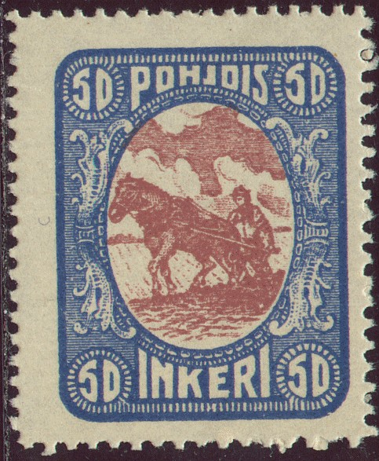
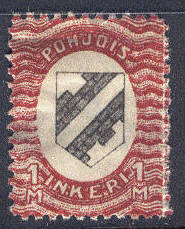
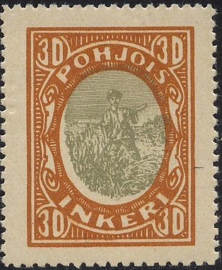

{kind=link}


Ingrie - Nordingermanland
Note: on my website many of the
pictures can not be seen! They are of course present in the
catalogue;
contact me if you want to purchase the catalogue.
This territory is located in Northern Russia near Finland (capital Kirjasalo). It became very briefly independent during a revolt in 1920. Afterwards it was occupied by Russia.

5 p green 10 p red 25 p brown 50 p blue 1 M red and black 5 M lilac and black 10 M brown and black
These stamps have perforation 11 1/2.
Value of the stamps |
|||
vc = very common c = common * = not so common ** = uncommon |
*** = very uncommon R = rare RR = very rare RRR = extremely rare |
||
| Value | Unused | Used | Remarks |
| 5 p | c | * | |
| 10 p | c | * | |
| 25 p | c | * | |
| 50 p | c | * | |
| 1 M | ** | *** | |
| 5 M | *** | R | |
| 10 M | *** | R | |
Remainders were apparently overprinted with 'Inkerin hyvaksi' and sold to collectors. I have never seen this overprint.

10 p green and blue (arms, large size) 30 p brown and green (farmer) 50 p blue and brown (ploughing) 80 p red and grey (milking) 1 m red and grey 5 m violet and red 10 m brown and violet
These stamps have perforation 11 1/2.
Value of the stamps |
|||
vc = very common c = common * = not so common ** = uncommon |
*** = very uncommon R = rare RR = very rare RRR = extremely rare |
||
| Value | Unused | Used | Remarks |
| 10 p | c | * | |
| 30 p | c | * | |
| 50 p | * | * | |
| 80 p | * | * | |
| 1 M | * | * | |
| 5 M | * | ** | |
| 10 M | ** | *** | With inverted center: RRR |
Remainders were apparently overprinted with 'Inkerin hyvaksi' and sold to collectors. I have never seen this overprint.
Forgeries exist of these stamps and are probably more common than genuine stamps. See Bill Claghorn's forgery site for examples of genuine and forged stamps: http://members.tripod.com/claghorn1p/Ni/index.htm. I've also seen imperforate forgeries. I'm not sure if all the stamps shown above are genuine.
According to the book 'Focus on Forgeries' by Varro E. Tyler, there are at least 3 different kinds of forgeries of the 10 p and 30 p. The most common forgery of the 10 p has double outline of the inner part of the blue shield on top. I've also only seen this forgery with a blue blotch in the upper right corner of the outer outline of this shield. The most common 30 p forgery has the bottom part of the 'S' of 'POHJOIS' thinner than in the genuine stamps. Tyler does not mention anything about the other values. Genuine stamps with forged cancels also exist.

Two most common forgeries of the 10 and 30 p values.
Ingermanland was incorporated into the Sowjet Union afterwards.
{kind=link}